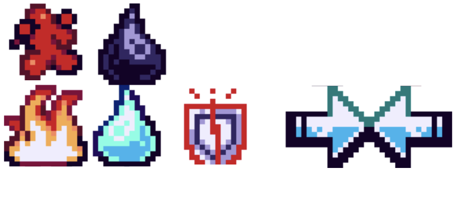
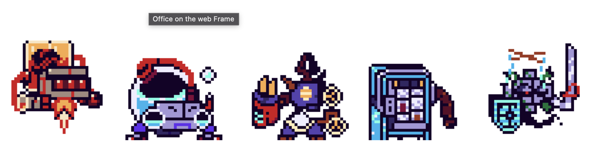
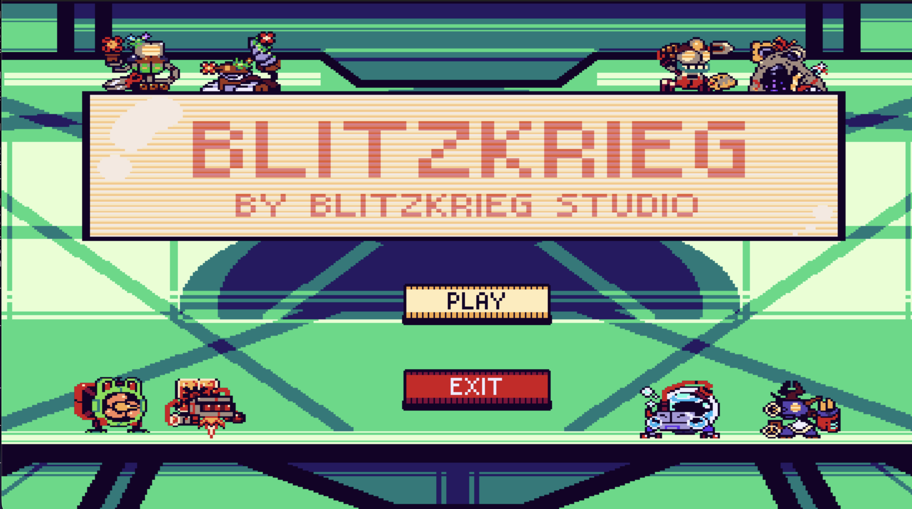
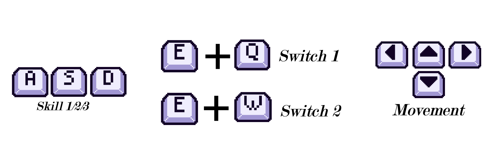
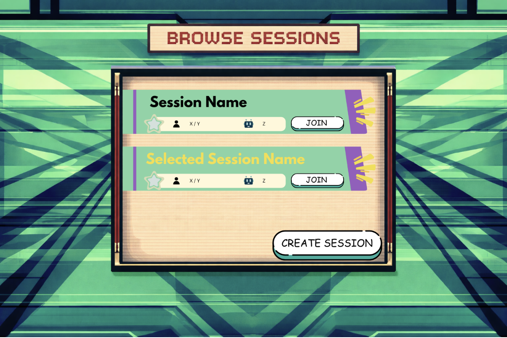
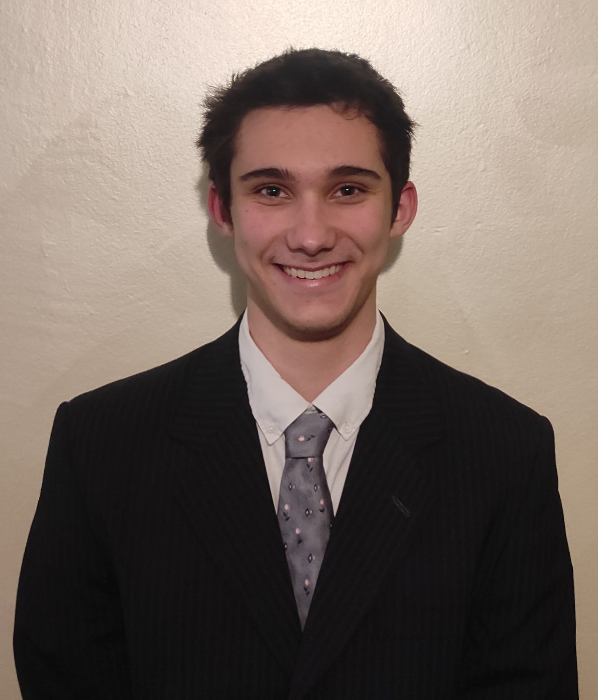
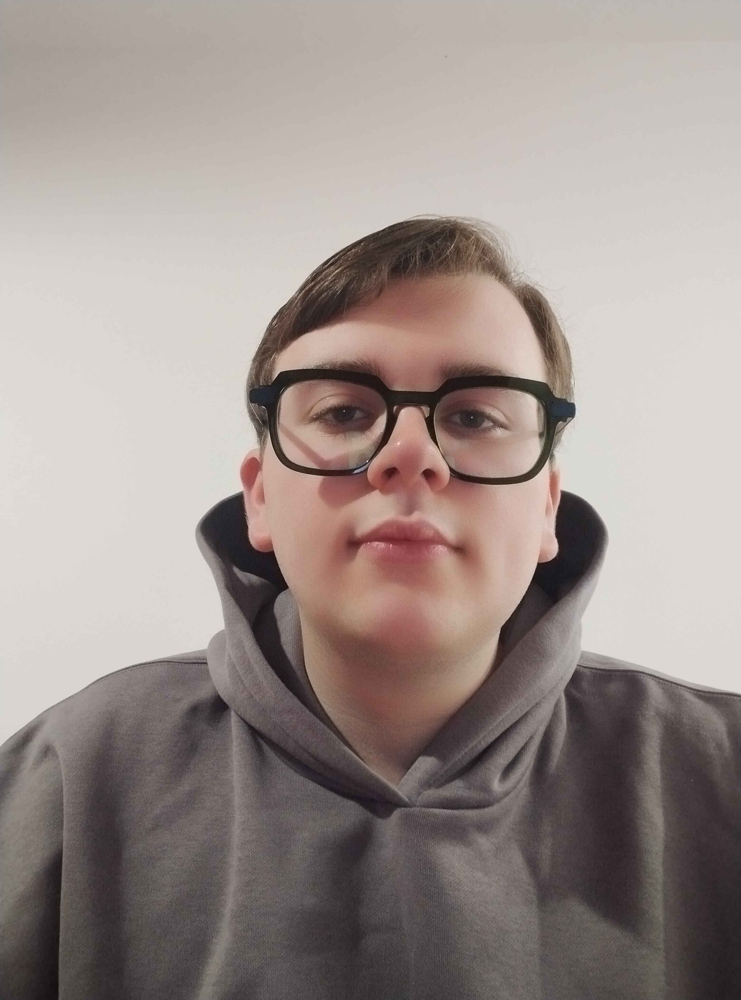
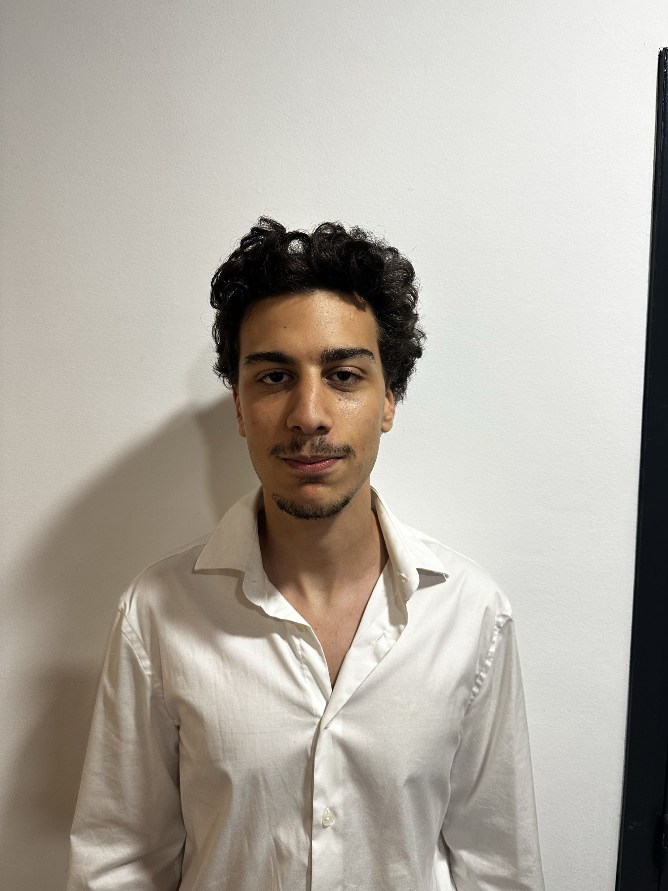

General presentation of the project
Blitzkrieg is a fast paced multiplayer team based fighting
game where you can play as a large cast of robots with
various unique designs, play styles, and synergies.
In the game, up to four people can play against each other
using a vast array of characters.
Before a game begins, each player chooses three of the 5
playable robots before duking it out on one of the 3
available maps.
The last one standing is declared the winner.
The game put a great emphasis on team-building, strategy,
and fast thinking.
The pillars of gameplay

Statuses are temporary effects applied to characters (burn, oil, freeze, etc.) that change their behavior or abilities. The originality of the game lies in the synergy between these statuses: some combined effects trigger special reactions, such as an explosion if a burning enemy is also covered in oil. Players must exploit these interactions to gain the upper hand and control the battlefield.
Before each match, every player builds their team by
choosing three characters from a diverse selection. Each
character has their own stats, resistances, and abilities.
Team composition is crucial: you must balance offense,
defense, and status synergies to maximize your chances of
victory.
The team building phase is one of the most strategic aspects
of Blitzkrieg. Players must consider not only the individual
strength of each character but also how they synergize with
one another. Some characters work better together due to
shared status effects or complementary abilities. For
instance, pairing a character that applies fire damage with
one that triggers explosions on flammable enemies creates
powerful combos. Additionally, players must anticipate their
opponents' strategies and build defensive or offensive teams
accordingly. The depth of team building ensures that every
match feels unique, and multiple viable team compositions
exist, allowing different playstyles and strategies to
flourish.

The game offers 5 playable characters, each with unique styles, abilities, and strategies. Some are specialized in direct attacks, others in support or area control. This diversity allows every player to find a style that suits them and to experiment with different combinations.How the Gameplay works
During a match, every player has one character on the field at a
time (the 1st one selected at the start of the match) while the
two others act as backup, swapping with the current character
either when the 1st one dies or when the player uses a specific
command.
On the field, the character can move in every direction and
attack left or right using one of their 3 character specific
skills.
Each character possesses different stats, different for each
character.
The stats are the health, speed, cooldowns, and resistances of
the current character.
As backup, a character can use one of their moves, even if they
are not on the field, allowing for combos and synergies between
characters.
If a character is dead, it can't use its support skill, even if
the character isn't fielded.
There are four types of attacks (slash, pierce, blunt and
''none'') and the resistances of a character affects the damage
received by the first three (from taking 50% damage to 150%).
Statuses, inflicted by almost every attack in the game, have
their own effect (ex: burning an enemy) but also have synergies
when some other statuses are present on the same target (ex: an
enemy covered in oil explodes when also burned).

At the end the interface of the menu should look like this.
The interface is designed to be intuitive and user-friendly,
allowing players to easily navigate through menus, select
characters, and set up matches.
For now, this is just the design concept, for the first page
of the menu, even not yet implemented in the game.
Actually in the gameplay phase, you have already choosen 3 characters for your team. Two of them are on a side line as backups, while one is active on the battlefield. You can switch between your characters at any time to adapt to the situation. Each character has four unique abilities, each with its own cooldown period. You must use these abilities strategically, considering their effects, cooldowns, and potential synergies with statuses for win.

When launching the game, the player accesses an intuitive menu to set up the match (the menu without any clean desgin for the moment): choose the mode (local or online), number of players and AIs, select characters and the map. In-game, each player controls one active character but can switch at any time with one of their two backups. Battles are paced by the use of abilities with cooldowns, the application of statuses, and strategic team management. The last player with at least one character alive wins the match.
How sessions works
To allow multiple matches to run simultaneously, the game uses a
room-based session system. Instead of placing all players in a
single game instance, the server creates independent sessions
where groups of players can play separately.
Players can create a new session by choosing a session name and
configuring parameters such as the number of bots. Once created,
the session becomes visible to other players in the session
browser, which displays all currently available sessions along
with basic information such as the session name and the number
of connected players.
From this menu, players can easily join an existing session by
selecting it from the list. When a player joins a session, they
are assigned a position in the room and can proceed to the
character selection menu to prepare for the match.
Each session is managed independently by the server. This
ensures that multiple groups of players can create, join, and
play matches at the same time without affecting other sessions
running on the server.

Music Compsitor
David was the project's principal music composer and audio implementer, overseeing everything from technical integration to artistic output. He used BandLab to construct the unique menu music and painstakingly selected and altered royalty-free, legally compatible recordings to fit the old pixel-art style of the game. Technically speaking, he created a solid Python Music's class using Pygame to manage smooth in-game audio transitions. He also showed off his strong problem-solving abilities by converting his entire development environment to Windows in order to fix audio testing problems. He performed a crucial cross-functional role in addition to his primary audio duties by helping with character implementation, troubleshooting bugs, and offering insightful feedback to guarantee a cohesive final product.
Programming leader and coordinator

As the Project Lead and Core Programmer, Yloan was in charge of the game's fundamental technological architecture as well as team coordination. In terms of management, he organised frequent meetings, set up the Discord server, and organised the GitHub repository to define the team's workflow. Technically speaking, they fully engineered the crucial backend systems, such as the server architecture, the session browser (room system), and the AI systems, and he co-developed the menu interface with Quentin.
Gameplay & UI Programmer
Throughout the project, Quentin's contributions focused heavily on the technically demanding areas of the user interface and character systems, while also providing a valuable lesson in managing software complexity. On the UI side, he designed and implemented the main menu, the character selection screen—which required multiple iterations to refine—and the in-game pause menu, a task that involved careful game-loop integration and the successful debugging of a complex rendering pipeline issue. For the character systems, Quentin collaborated with the team to ensure animations, states, and behaviors functioned correctly. Furthermore, he worked closely with Yloan to resolve integration bugs that only appeared when multiple systems ran simultaneously. Ultimately, this large-scale project highlighted how rapidly complexity accumulates, teaching him that the true challenge of game development lies not in building individual features, but in ensuring they integrate seamlessly into a cohesive whole.
Lead Designer and Art Director

As Lead Designer and Art Director, Aegon was the creative driving force behind Blitzkrieg, conceiving the original idea inspired by a childhood mechanical creature drawing competition and establishing the game's core mechanical identity through an innovative, synergistic status effect system. He personally produced the vast majority of the game's visual and audio assets from scratch, including all five fully animated playable characters, the Forest and Desert maps, the main menus, the HUD, and all individual skill and status visual and sound effects. Although a personal health condition later forced the team to collectively scale down the project's original, highly ambitious scope from eighteen characters to five, this necessary adjustment did not diminish the high quality, distinctiveness, or commitment of the substantial body of work Aegon ultimately delivered throughout the year.
Technical UI & Level Designer

During his participation in the project, Adam focused on creating a cohesive, polished, and functional design identity across three main areas: visual designs, maps, and web content. On the UI side, he established a unified visual language for all pre-game screens—including the main menu, session browser, and map selection pages—utilizing a consistent green and cyan color scheme. Developed using Photoshop, Illustrator, and Canva, these modular assets were designed for easy integration and underwent numerous revisions based on team feedback, particularly from Quentin, who implemented the menu system, and Yloan, whose session browser structure guided the data layouts. Shifting to map design, Adam created the crystal map, transforming pixel art into an atmospheric playable area by collaborating closely with Aegon to align tile density, color palettes, and layered assets with the game's overall art direction. For the web component, he designed the visual layout and CSS for the project's website hosted on Vercel, matching the game's aesthetic, typography, and color palette, while working alongside David, who handled the HTML structure. Ultimately, this large-scale project gave Adam a deeper understanding of how design serves as a vital guide and constraint within a developer's workflow, proving most successful when it seamlessly facilitated technical implementation.